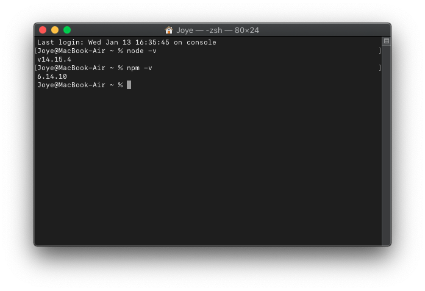

# MacOS下npm does not support Node.js vx.x.x 但是npm版本太低导致npm i -g npm命令无效无法升级npm的解决办法

不会debug

于 2021-01-13 17:52:54 发布

366


收藏
1
分类专栏：
Node.js
文章标签：
node.js
npm
版权声明：本文为博主原创文章，遵循 CC 4.0 BY-SA 版权协议，转载请附上原文出处链接和本声明。
本文链接：https://blog.csdn.net/m0_46338111/article/details/112579225
版权

Node.js
专栏收录该内容
2 篇文章
0 订阅
订阅专栏
## 我遇到的问题
最近开始学node.js，我电脑里npm版本是6.x.x，但是我改成了和教学视频里一样的版本5.5.1。于是就出现了npm does not support Node.js vx.x.x的问题。搜索了许多解决办法都是升级npm到和node适配的版本（查看node和npm的版本支持关系），但是我的npm版本太低，npm i -g npm升级命令直接无效了。
 于是我选择卸载npm和node，并重新安装node（因为node.js内置了npm，所以安装好node之后npm也就安装好了）。
于是我选择卸载npm和node，并重新安装node（因为node.js内置了npm，所以安装好node之后npm也就安装好了）。
# 解决方法
# 1.卸载npm
打开terminal（终端)，依次执行如下命令。
# 删除node创建的各种文件夹
sudo rm -rf /usr/local/lib/node
sudo rm -rf /usr/local/lib/node_modules
sudo rm -rf /var/db/receipts/org.nodejs.*
sudo rm -rf /usr/local/include/node /Users/$USER/.npm*
12345
# 2.卸载node
# 删除node命令
sudo rm /usr/local/bin/node
# 删除node的所有man手册
sudo rm /usr/local/share/man/man1/node.1
sudo rm /usr/local/share/man/man1/npm-*
sudo rm /usr/local/share/man/man1/npm.1
sudo rm /usr/local/share/man/man1/npx.1
sudo rm /usr/local/share/man/man5/npm*
sudo rm /usr/local/share/man/man5/package.json.5
sudo rm /usr/local/share/man/man7/npm*
# 这个命令也是删除一个node文件
sudo rm /usr/local/lib/dtrace/node.d
1234567891011121314
然后输入npm -v 和node -v结果应该都是 command not found，这时就成功卸载npm和node了。
ps：这里参考了这篇文章。
# 3.去node官网重新下载node
下载安装包后直接双击，然后一直下一步就可以了。
安装好后在终端依次输入npm -v 和node -v查看是否安装成功。
安装成功：  然后npm的各项命令就可以正常使用了～
$(function() { setTimeout(function () { var mathcodeList = document.querySelectorAll('.htmledit_views img.mathcode'); if (mathcodeList.length > 0) { var testImg = new Image(); testImg.onerror = function () { mathcodeList.forEach(function (item) { $(item).before('(' + item.alt + ')'); $(item).remove(); }) MathJax.Hub.Queue(["Typeset",MathJax.Hub]); } testImg.src = mathcodeList[0].src; } }, 1000) })
文章来源：https://blog.csdn.net/m0_46338111/article/details/112579225